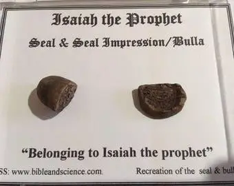
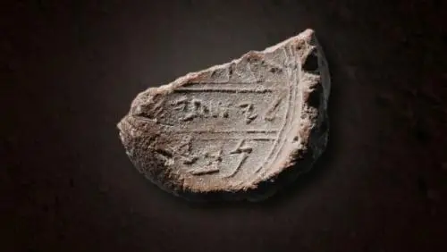
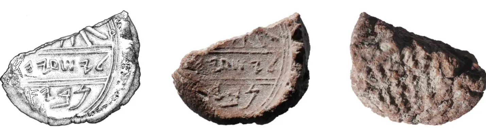

Ерусалім. Іўдзея. VIII – VII ст. да Н. Х., рэпрадукцыя.
  Адбітак пячаткі з надпісам імя «Ісая» і магчыма словам «прарок». Мяркуецца, што пячатка прыналежыла прароку Ісаі, які нёс сваё служэнне ў Іўдзеі. Гэта пячатка была знойдзена побач з пячаткай іўдзейскага цара Эзэкіі. У перыяд царавання Эзэкіі Госпад, па слову сказанаму праз Ісаю, цудоўным чынам дапамог адбіць асірыйскую навалу на Ерусалім (2 Валадароў 19:14–37).